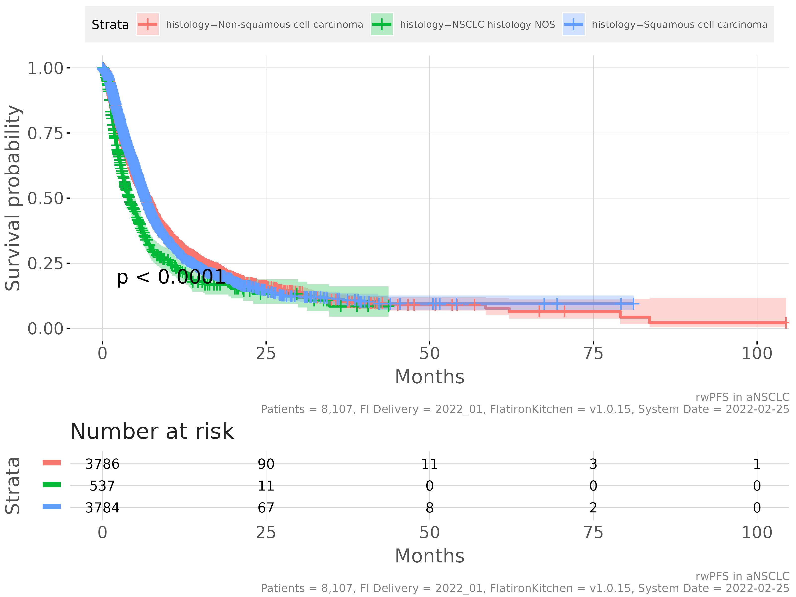
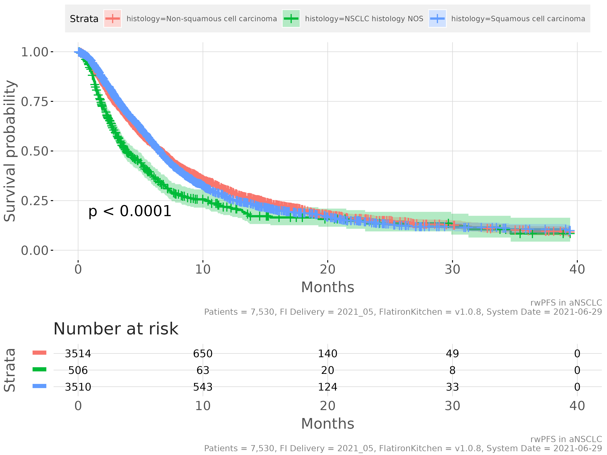

Real-world Progression-free Survival (rwPFS)
Michael Bretscher
2022-02-28
real_world_PFS.RmdAcknowledgements for supporting the work on rwPFS in one way or another: Robson Machado, Shivani Mhatre, Thanh Ton, Huong Trinh, Jinjoo Shim, Giovanni D’Ario, Francesca Michielin, Venus So, Xing Yang, Prabhu Shanmugasundaram, Kalyan Nandi
Note that the vignette below is currently written for FlatironKitchen and needs to be updated. FlatironKitchen imports the present realworldPFS package and provides wrappers around add_progression, calc_rwPFS and compare_rwPFS functions, called fi_add_progression, fi_calc_rwPFS, and fi_compare_rwPFS, respectively.
For details on how the use of a realworldPFS function differs from the corresponding FlatironKitchen wrapper please consult ?function_name.**
Feel free to skip the background section if just looking for how to use the software - if conducting an actual analysis, we recommend to read it in order to understand the pitfalls of using rwPFS
Background on rwPFS
Progression-free Survival (PFS) is a commonly used time-to event endpoint in cancer trials. It is defined as the first event of either death or progression, whichever occurs first.
An important difference between PFS and Overall Survival (OS) endpoints is that PFS requires close follow-up of patients, whereas OS does not. This is because death is a one-time event, and whenever a patient is contacted alive, we know that death had not occurred previously. This is not the case when looking at progression, hence patients must be closely monitored.
The mechanisms of data-collection differ between real-world data & clinical trials (Mhatre 2021):
In clinical trials, tumor assessments are commonly scheduled at regular intervals, and progression is assessed using standardized criteria. The reason for collecting PFS data in clinical trials is commonly to measure efficacy. Transparency and consistency of the data collection process is emphasized.
In routine health care, there is no protocol and hence no scheduled tumor assessments nor standardized criteria for assessing progression. Physicians may primarily measure progression in order to make treatment decisions, not to measure effectiveness. In addition, transparency and consistency of data collection are likely to be less important objectives than cost considerations or minimization of discomfort for the patient (e.g. by avoiding unnecessary scans).
Because of these differences, it appears sensible to speak of “real-world PFS” (rwPFS) and to treat it as distinct from trial PFS.
However, due to the highly similar definitions of rwPFS and PFS, it is possible that the two endpoints may be exchangeable, meaning they essentially lead to the same result and could be used to compare effectivness of treatments both within a particular real-world data source as well as between trial and real-world data.
Whether or not PFS and rwPFS endpoints are exchangeable and can be used for comparing drug efficacy across two data sets (real-world and clinical trial) may depend on indication, drug category, real-world database, and other factors. While attempts should be made to understand and ensure quality of data collection in the real-world data, this will likely never be perfect. Consequently, empirical confirmation of exchangeability of rwPFS and PFS will be needed. This can be done by replicating trial arms and comparing rwPFS and trial PFS outcomes (Mhatre 2021; Ton 2021), across indications and drug categories.
Publications assessing exchangeability of rwPFS and trial PFS
The following publications assess exchangeability of rwPFS and PFS:
Ton (2021) : aNSCLC chemotherapy
Mhatre (2021) (in preparation): aNSCLC chemotherapy and immunotherapy
Please help complete this list by suggesting additional articles
Algorithm for calculating rwPFS using Flatiron data
The schematic below illustrates the important elements required for calculating a rwPFS endpoint:
the start date (baseline)
‘lastclinicnotedate,’ the date up to which progression was abstracted from clinical notes
the dates of any progression events of interest (may be a subset of events)
the date of death, if present
the date of a patient’s last structured activity in the database
the presence of potential visit gaps (not shown), indicating that the patient may not have been followed for progression due to prolonged absence from the clinic in the Flatiron network (e.g. >90d).
a time window after the end of progression follow-up where death events are to be captured. This is required because patients often leave the Flatiron network shortly before dying. If the time window is too small, there will almost exclusively be progression events. If the window is too large, more deaths are captured, but at the same time the risk of missing any progression events increases. Therefore, a pragmatic choice in the middle will have to be made. More on this point later.

A general algorithm for calculation of rwPFS consists of the following steps:
Determine the period of continuous progression follow-up.
It begins at baseline and ends at one of the following, whichever occurs first:
the start of a long gap between visits (e.g. >90d)
the date of last progression abstraction (‘lastclinicnotedate’)
the date of last structured activity in the database
Determine the type of rwPFS event, in this order:
“Progression,” if an event occurs during the follow-up period
“Death,” if it occurs within the specified time window after end of follow-up
“Censoring” otherwise
Create rwPFS variables
record a rwPFS event in case of death or progression event types
otherwise, censor the patient at the end of progression follow-up
calculate the time from baseline to event or censoring
There are several possible rwPFS definitions
Multiple possible definitions of rwPFS can be specified based on the elements mentioned above:
different subsets of progression events in Flatiron’s progression table could be used, e.g. only radiographically confirmed progression events, or only progression events that occur more than 14 days after baseline (as per Flatiron recommendation)
different possibilities exist to handle changes in the line of therapy (LoT): one could either
follow the patient for progression into a subsequent LoT if no progression has occurred, or..
censor the patient at the start of a subsequent LoT, or..
impute a progression event at the start of a subsequent LoT (following the clinical logic that LoT is anchored to progression)
different choices are possible for the length of the time window to capture death events
the aim is to capture most of - and only - the death events correlated in time with the end of follow-up.
this is reminiscent of informative censoring - except events after the end of follow-up can be assessed and potentially included.
reasonable values for the length of the time window can be argued based on comparison with data collection in trials, or - in a data-driven way - by inspecting the drop in death events as the window is being extended (see best practices below). For a detailed discussion see Mhatre (2021)
ultimately, any choice will remain arbitrary to some extent.
it seems reasonable to ensure gapless progression follow-up, but the choice of a maximally tolerable gap length between visits remains arbitrary. A commonly used value is 90 days, however, without a very strong rationale.
Best practices to support the emergence of consensus definitions
As outlined above, there is a range of possible definitions of rwPFS. To determine which of these are most closely mimicking clinical trial PFS requires discussions with subject matter experts, and it is possible that different conclusions may be reached depending on cancer type, indication, drug category, analysis objective, or other factors. From our experience in aNSCLC (Mhatre 2021; Ton 2021) several definitions - not only one - remain viable options even after discussion with experts, and eventually a pragmatic choice must be made. Despite a desire for standardization, we reached the conclusion that defining a single standard is not helpful given the current state of knowledge, and that instead we should promote best practices that support the emergence of - preferably rather few - standard definitions via publications in the scientific literature.
To promote the emergence of standard rwPFS definitions and comparability across analyses we propose the following best practices:
Proposed best practices when using rwPFS
Check if there is already a commonly used rwPFS definition in analyses similar to yours.
Discuss sensible rwPFS definitions with subject matter experts.
If there is already a commonly used rwPFS definition that passes the expert test, try to use it.
If you have reasons to use a different definition, do so and try to explain your choice
Be transparent about the exact definition you’re using
Explore a range of sensible alternative definitions and report key descriptors to show how rwPFS definition affects the conclusions of the analysis
The basics: adding rwPFS
To start, we will add a rwPFS variable to our FlatironKitchen dataset. For simplicity, we will use the rwPFS definition used in Mhatre (2021) and Ton (2021):
Use all progression events except where “pseudoprogression mentioned” (not only events based on radiographic evidence, and we don’t discard progression events occurring within 2 weeks after baseline)
Follow patients for progression into subsequent lines of treatment (do not censor them at start of new line, do not impute progression at line change)
Include death events occurring <30d after end of progression follow-up
Censor individuals if there is a visit gap > 90 days during follow-up
Use the first progression event when there are several
Setup
- Load the required libraries
library(dplyr)
library(FlatironKitchen)Here is the version of FlatironKitchen used in this vignette.
packageVersion("FlatironKitchen")
#> [1] '1.0.15'- Create a FlatironKitchen object, using the advanced Non Small-cell Lung Cancer datamart
fk <- fi_start(
datamart = "AdvancedNSCLC",
title = "rwPFS in aNSCLC"
)
#> Connecting to MDHmeta API and saving to cache...
#> MDHMeta connections saved in the session cache.
#> Reading connections from the package config file...
#> Trying to access in-memory cache of MDH connections...
#> Reading connections from the package config file...- Add information on the 1st line of therapy (note we’re also getting info on the 2nd line for later..)
fk <- fk %>%
fi_add_lineoftherapy_flatiron(
lines = c(1,2),
index_date = "advanceddiagnosisdate",
left = 0,
right = 90,
calc_duration = FALSE
) - We will look at the rwPFS in patients that receive Carboplatin & Paclitaxel in first line
fk <- fk %>%
fi_cohort_include(
lot1linename == "Carboplatin,Paclitaxel",
description = "Carboplatin & Paclitaxel in 1st line",
keep_na = FALSE
) Let’s a have a quick look at the cohort we’ve just selected:
print(fk)
#> [34mProject[39m
#> $title : rwPFS in aNSCLC
#> $datamart : [33mAdvancedNSCLC[39m
#> $version : 1.0.15 'Tiramisu'
#> $year_month : 2022_02 'Feb 2022'
#>
#> [34mPatients[39m
#> $n : [32m8,489[39m Patients
#> $col_names : 40 [[90m...[39m, lot2baseecogdate, lot2baseecogvalue]
#>
#> [1m[34mAttrition[39m
#> [22mAdvancedNSCLC : 75,559 ----------------------------------------
#> Carboplatin & Paclitaxel in 1st lin : [32m8,489[39m ----
#> [1m[31m
#> Warnings[39m
#> [22m- 593 (0.8%) patients appear in at least one other enhanced cohort.
#> - 453 patient(s) are associated with different practice types. For th...
#> - 22 (0%) patient(s) had DateOfDeath values unlike YYYY-MM and will b...
#> - 14 patients have same base ecogvalue and base ecogdate for differen...These are the variables we currently have in our data:
fk$data %>% names
#> [1] "patientid" "diagnosisdate" "advanceddiagnosisdate"
#> [4] "histology" "groupstage" "smokingstatus"
#> [7] "multiple" "birthyear" "gender"
#> [10] "race" "ethnicity" "state"
#> [13] "practiceid" "practicetype" "primaryphysicianid"
#> [16] "multiple_practicetype" "region" "raceethnicity"
#> [19] "dateofdeath" "valid_dateofdeath" "death"
#> [22] "lastvisitdate" "lastadmindate" "lastlabdate"
#> [25] "lastvitalsdate" "enddate" "lastactivitydate"
#> [28] "lastcontactdate" "lot1linename" "lot1linecategory"
#> [31] "lot1startdate" "lot1enddate" "lot2linename"
#> [34] "lot2linecategory" "lot2startdate" "lot2enddate"
#> [37] "lot1baseecogdate" "lot1baseecogvalue" "lot2baseecogdate"
#> [40] "lot2baseecogvalue"Note that several variables required for the calculation of rwPFS are already present.
These are “lot1startdate” (our baseline), lastactivitydate and dateofdeath.
What’s still missing for the calculation of rwPFS (besides progression), is information on any long gaps between visits, so let’s do this
- Add information on visit gaps larger than 90 days from start of 1st line onwards
fk <- fk %>%
fi_calc_visitgap(
index_date = "lot1startdate",
gapdays = 90,
what = "After",
force_database = FALSE
)This is required to ensure gapless progression follow-up. The function added a few columns related to the visit gap, of which we only need the date of the “lastvisitbeforegap.”
Add information on progression
- add the date of the first progression event and end date of progression abstraction (“lastclinicnotedate”)
Selecting the subset of progression events to use is the first step of specifying a rwPFS definition. Here we stick to the definition outlined above, using all progression events, radiographic or not, and we don’t discard any events occuring right after baseline. We do exclude events that are flagged “ispseudoprogressionmentioned,” though. Incidentally, there won’t be any pseudoprogression events in chemotherapies such as the Carboplatin & Paclitaxel combination (you could check the number of events to verify). Here we’re simply sticking to the definition proposed by Mhatre (2021) for use across both CIT and chemotherapies in aNSCLC, based on the OAK trial (see Mhatre (2021) for details).
fk <- fk %>%
fi_add_progression(
start_date = "lot1startdate", #we're measuring rwPFS from the start of treatment
require_radiographic = FALSE, #we don't require progression to be radiographically confirmed (in NSCLC, most are anyway)
exclude_pseudoprogression = TRUE, #we exclude pseudoprogression events (there won't be any in our chemo treatment)
discard_n_days = 0, #we do not discard any progression events right after baseline
label = "_nopseudo", #this (optional) label will help us keep different rwPFS endpoints apart later
prog_filter_expression = NULL #this is an advanced feature allowing more flexible event selection, explained later. Defaults to NULL.
)
#>
#> ── [36mfi_add_progression()[39m ──────────────────────────────────────────────────────
#> Note : Adding first progression event after lot1startdate, discarding events within the first 0 days. Require_radiographic: FALSE. Exclude_pseudoprogression: TRUE. Label: "_nopseudo". Expression for additional filtering of progression events: none.
#> Touching: [33mENHANCED_ADVNSCLCPROGRESSION[39m
#> Joining, by = "patientid"
#> Warning : [31m305 patient(s) had no progression information abstracted beyond startdate (lastclinicnotedate set to missing)[39m
#> NewCols : [34mprogressiondate_nopseudo, lastclinicnotedate_nopseudo[39m
#> [90mTime : 11.5s [98 s][39mTwo new columns were added: progressiondate_nopseudo and lastclinicnotedate_nopseudo
Note that FlatironKitchen warned us that 287 out of our 7,823 patients had no progression abstracted beyond the baseline date. This can happen if patients had no progression information abstracted at all, or their lastclinicnotedate is before our startdate. At this point we could exclude those patients since it won’t be possible to calculate rwPFS for them. However, let’s leave them for now, in order to demonstrate how the downstream functions deal with such cases.
Habemus real-world PFS!
Not yet - but soon. Now that all required columns are present in our dataset, we can..
- Compute the rwPFS endpoint
fk <- fk %>%
fi_calc_rwPFS(
start_date = "lot1startdate", #we're measuring rwPFS from the start of treatment
visit_gap_start_date = "lastvisitbeforegap", #the start date of any gap in visits longer than 90 days
last_clinic_note_date = "lastclinicnotedate_nopseudo", #the lastclinicnotedate we just added..
progression_date = "progressiondate_nopseudo", #..and the progression date with the same label
last_activity_date = "lastactivitydate", #the date of last activity in the database
death_date = "dateofdeath",
death_window_days = 30, #include death events up to 30d after end of progression follow-up
max_follow_up_days = Inf, #censor patients after a maximum time (e.g. to harmonize with the trial). Defaults to Inf.
label = "_no_pseudoprogression" #let this be our primary rwPFS definition, the reference to compare others against
)
#>
#> ── [36mfi_add_rwPFS()[39m ────────────────────────────────────────────────────────────
#> Note : Adding first rwPFS event after lot1startdate, including death events occurring up to 30d after end of progression follow-up. Label: _no_pseudoprogression.
#> Warning : [31mThe rwPFS variables for 388 patient(s) were set to missing. This could be due to one of the following reasons: missing lastclinicnotedate, missing date of last activity, lastclinicnotedate equal to the startdate, or a date of death being earlier than the start date (this can happen because death dates are rounded to mid-month in Flatiron). These could be either removed from the data, or manually censored at baseline (to preserve the distribution of baseline covariates)[39m
#> NewCols : [34mrwpfs_no_pseudoprogression_eof_date, rwpfs_no_pseudoprogression_event_type, rwpfs_no_pseudoprogression_date, rwpfs_no_pseudoprogression_days, rwpfs_no_pseudoprogression_event, rwpfs_no_pseudoprogression_months[39m
#> [90mTime : 0.1s [98 s][39mNote the warning about some patients having been set to missing. Let’s have a closer look at those.
fk$data %>%
filter(rwpfs_no_pseudoprogression_event_type == "Missing") %>%
count(
`missing lastclinicnotedate` = is.na(lastclinicnotedate_nopseudo),
`lastclinicnotedate on start date?` = lot1startdate == lastclinicnotedate_nopseudo,
`missing last activity date?` = is.na(lastactivitydate),
`death before start date` = dateofdeath <= lot1startdate
) %>%
knitr::kable() | missing lastclinicnotedate | lastclinicnotedate on start date? | missing last activity date? | death before start date | n |
|---|---|---|---|---|
| FALSE | FALSE | FALSE | FALSE | 56 |
| FALSE | FALSE | FALSE | TRUE | 17 |
| FALSE | FALSE | FALSE | NA | 10 |
| TRUE | NA | FALSE | FALSE | 215 |
| TRUE | NA | FALSE | TRUE | 26 |
| TRUE | NA | FALSE | NA | 64 |
It looks like a total of 278 patients had a missing lastclinicnote date (this may have been so from the start, or fi_add_progression may have set this to missing in case it was before the start date). The fi_add_progression function had already alerted us about this. An additional 17 patients seem to have their death dates before start date, which is likely due to the monthly granularity of death dates in Flatiron (for de-identification purposes). Let us remove patients with missing rwPFS.
fk <- fk %>%
fi_cohort_exclude(rwPFS_no_pseudoprogression_event_type == "Missing",
description = "Exclude missing rwPFS",
keep_na = FALSE
)
#>
#> ── [36mfi_cohort_exclude()[39m ───────────────────────────────────────────────────────
#> Note : Description = Exclude missing rwPFS
#> Note : Code = rwPFS_no_pseudoprogression_event_type == "Missing"
#> Excluded: [31m388[39m patients
#> Cohort : [32m8,101[39m patients
#> [90mTime : 0s [98 s][39mFinally, let’s plot the Kaplan-Meier curve for rwPFS, stratified by histology.
fk %>%
fi_stat_survfit(
followup_duration = "rwpfs_no_pseudoprogression_months",
status = "rwpfs_no_pseudoprogression_event",
strata = "histology"
) %>%
fi_plot_km(
xlab = "Months"
)
This doesn’t look too bad - except that the different histologies have very different follow-up times, it seems. Let’s re-generate those rwPFS variables, but this time right-censor patients with respect to rwPFS at around 40 months - let’s say 1200 days.
fk <- fk %>%
fi_select(-contains("rwpfs")) %>% #FK doesn't let us overwrite columns, lots remove the old ones first..
fi_calc_rwPFS(
start_date = "lot1startdate",
visit_gap_start_date = "lastvisitbeforegap",
last_clinic_note_date = "lastclinicnotedate_nopseudo",
progression_date = "progressiondate_nopseudo",
last_activity_date = "lastactivitydate",
death_date = "dateofdeath",
death_window_days = 30,
max_follow_up_days = 1200,
label = "_no_pseudoprogression"
)
#> [90mTime : 0s [98.1 s][39m
#>
#> ── [36mfi_add_rwPFS()[39m ────────────────────────────────────────────────────────────
#> Note : Adding first rwPFS event after lot1startdate, including death events occurring up to 30d after end of progression follow-up. Label: _no_pseudoprogression.
#> NewCols : [34mrwpfs_no_pseudoprogression_eof_date, rwpfs_no_pseudoprogression_event_type, rwpfs_no_pseudoprogression_date, rwpfs_no_pseudoprogression_days, rwpfs_no_pseudoprogression_event, rwpfs_no_pseudoprogression_months[39m
#> [90mTime : 0.1s [98.1 s][39m..and plot it again
fk %>%
fi_stat_survfit(
followup_duration = "rwpfs_no_pseudoprogression_months",
status = "rwpfs_no_pseudoprogression_event",
strata = "histology"
) %>%
fi_plot_km(
xlab = "Months"
)
This looks much cleaner. Congratulations, you’ve mastered the basics of using rwPFS!
Advanced: comparison of multiple rwPFS definitions
As mentioned before, there is more than one way of defining rwPFS. Often, the differences between definitions will be small - but nevertheless, we need to show this, we can’t just assume they are, and we must be able to answer questions in that direction.. However, conducting a full sensitivity analysis for each and every rwPFS definition seems overkill.. so what do we do?
Ideally, we’d have a concise summary table, where readers could verify at one glance what the impact of varying the endpoint definition would be. This is what we’ll try to do..
First, let’s calculate rwPFS across a range of “reasonable” definitions, starting with the progression part & varying one aspect at a time, always comparing against our reference progression variable defined previously.
fk <- fk %>%
#do not remove pseudoprogression events
fi_add_progression(
start_date = "lot1startdate",
require_radiographic = FALSE, #we don't require progression to be radiographically confirmed (in NSCLC, most are anyway)
exclude_pseudoprogression = FALSE, #we don't exclude pseudoprogression events (there won't be any in our chemo treatment)
discard_n_days = 0, #we do not discard any progression events right after baseline
label = "_allevents",
prog_filter_expression = NULL
) %>%
#omit progression events occurring within 14d of baseline (Flatiron guidance)
fi_add_progression(
start_date = "lot1startdate",
require_radiographic = FALSE, #we don't require progression to be radiographically confirmed (in NSCLC, most are anyway)
exclude_pseudoprogression = TRUE, #we exclude pseudoprogression events (there won't be any in our chemo treatment)
discard_n_days = 14, #we discard any progression events within 14d after baseline
label = "_omit_le_14d",
prog_filter_expression = NULL
) %>%
#only use radiographically confirmed progression events
fi_add_progression(
start_date = "lot1startdate",
require_radiographic = TRUE, #we require progression to be radiographically confirmed (in NSCLC, most are anyway)
exclude_pseudoprogression = TRUE, #we exclude pseudoprogression events (there won't be any in our chemo treatment)
discard_n_days = 0, #we don't discard progression events shortly after baseline
label = "_only_radiographic",
prog_filter_expression = NULL
)
#>
#> ── [36mfi_add_progression()[39m ──────────────────────────────────────────────────────
#> Note : Adding first progression event after lot1startdate, discarding events within the first 0 days. Require_radiographic: FALSE. Exclude_pseudoprogression: FALSE. Label: "_allevents". Expression for additional filtering of progression events: none.
#> Touching: [33mENHANCED_ADVNSCLCPROGRESSION[39m
#> Joining, by = "patientid"
#> NewCols : [34mprogressiondate_allevents, lastclinicnotedate_allevents[39m
#> [90mTime : 12.4s [110.6 s][39m
#>
#> ── [36mfi_add_progression()[39m ──────────────────────────────────────────────────────
#> Note : Adding first progression event after lot1startdate, discarding events within the first 14 days. Require_radiographic: FALSE. Exclude_pseudoprogression: TRUE. Label: "_omit_le_14d". Expression for additional filtering of progression events: none.
#> Touching: [33mENHANCED_ADVNSCLCPROGRESSION[39m
#> Joining, by = "patientid"
#> NewCols : [34mprogressiondate_omit_le_14d, lastclinicnotedate_omit_le_14d[39m
#> [90mTime : 12s [122.6 s][39m
#>
#> ── [36mfi_add_progression()[39m ──────────────────────────────────────────────────────
#> Note : Adding first progression event after lot1startdate, discarding events within the first 0 days. Require_radiographic: TRUE. Exclude_pseudoprogression: TRUE. Label: "_only_radiographic". Expression for additional filtering of progression events: none.
#> Touching: [33mENHANCED_ADVNSCLCPROGRESSION[39m
#> Joining, by = "patientid"
#> NewCols : [34mprogressiondate_only_radiographic, lastclinicnotedate_only_radiographic[39m
#> [90mTime : 12.6s [135.3 s][39mWe also want to look at rwPFS definitions where
a progression event is imputed at the start of the next LoT
patients are censored at start of the next Lot
we don’t consider visit gaps
We already have the start date of the 2nd LoT from before. What we need is the date of those imputed progression events, and a columns that replaces the lastclinicnotedate with the start date of LoT 2 if it’s before lastclinicnotedate..
fk <- fk %>%
fi_mutate(
#impute progression at start of 2nd line
imputed_progression_date = pmin(progressiondate_nopseudo, lot2startdate, na.rm = T),
#censor at the earliest of lastclinicnotedate or start of 2nd line
imputed_censoring_date = pmin(lastclinicnotedate_nopseudo, lot2startdate, na.rm = T),
#adding an all_na column because fi_calc_rwPFS expects the start date of any long visit gaps - we'll tell it there are none..
all_na = NA_character_ %>% as.Date()
)
#> NewCols : [34mimputed_progression_date, imputed_censoring_date, all_na[39m
#> [90mTime : 0s [135.3 s][39mNow, we can calculate the different rwPFS endpoints corresponding to the above handling of progression events and LoT:
fk <- fk %>%
#all events
fi_calc_rwPFS(
start_date = "lot1startdate",
visit_gap_start_date = "lastvisitbeforegap",
last_clinic_note_date = "lastclinicnotedate_allevents",
progression_date = "progressiondate_allevents",
last_activity_date = "lastactivitydate",
death_date = "dateofdeath",
death_window_days = 30,
max_follow_up_days = 1200,
label = "_all_events"
) %>%
#omit events within 14d of baseline
fi_calc_rwPFS(
start_date = "lot1startdate",
visit_gap_start_date = "lastvisitbeforegap",
last_clinic_note_date = "lastclinicnotedate_omit_le_14d",
progression_date = "progressiondate_omit_le_14d",
last_activity_date = "lastactivitydate",
death_date = "dateofdeath",
death_window_days = 30,
max_follow_up_days = 1200,
label = "_omit_le_14d"
) %>%
#only use radiographically confirmed progression events
fi_calc_rwPFS(
start_date = "lot1startdate",
visit_gap_start_date = "lastvisitbeforegap",
last_clinic_note_date = "lastclinicnotedate_only_radiographic",
progression_date = "progressiondate_only_radiographic",
last_activity_date = "lastactivitydate",
death_date = "dateofdeath",
death_window_days = 30,
max_follow_up_days = 1200,
label = "_only_radiographic"
) %>%
#impute progression at start of 2nd line
fi_calc_rwPFS(
start_date = "lot1startdate",
visit_gap_start_date = "lastvisitbeforegap",
last_clinic_note_date = "lastclinicnotedate_nopseudo",
progression_date = "imputed_progression_date",
last_activity_date = "lastactivitydate",
death_date = "dateofdeath",
death_window_days = 30,
max_follow_up_days = 1200,
label = "_impute_progression"
) %>%
#censor at the earliest of lastclinicnotedate or start of 2nd line
fi_calc_rwPFS(
start_date = "lot1startdate",
visit_gap_start_date = "lastvisitbeforegap",
last_clinic_note_date = "imputed_censoring_date",
progression_date = "progressiondate_nopseudo",
last_activity_date = "lastactivitydate",
death_date = "dateofdeath",
death_window_days = 30,
max_follow_up_days = 1200,
label = "_censor_at_lot_change"
) %>%
#Ignore visit gaps
fi_calc_rwPFS(
start_date = "lot1startdate",
visit_gap_start_date = "all_na",
last_clinic_note_date = "lastclinicnotedate_nopseudo",
progression_date = "progressiondate_nopseudo",
last_activity_date = "lastactivitydate",
death_date = "dateofdeath",
death_window_days = 30,
max_follow_up_days = 1200,
label = "_ignore_visit_gaps"
)
#>
#> ── [36mfi_add_rwPFS()[39m ────────────────────────────────────────────────────────────
#> Note : Adding first rwPFS event after lot1startdate, including death events occurring up to 30d after end of progression follow-up. Label: _all_events.
#> NewCols : [34mrwpfs_all_events_eof_date, rwpfs_all_events_event_type, rwpfs_all_events_date, rwpfs_all_events_days, rwpfs_all_events_event, rwpfs_all_events_months[39m
#> [90mTime : 0.1s [135.3 s][39m
#>
#> ── [36mfi_add_rwPFS()[39m ────────────────────────────────────────────────────────────
#> Note : Adding first rwPFS event after lot1startdate, including death events occurring up to 30d after end of progression follow-up. Label: _omit_le_14d.
#> NewCols : [34mrwpfs_omit_le_14d_eof_date, rwpfs_omit_le_14d_event_type, rwpfs_omit_le_14d_date, rwpfs_omit_le_14d_days, rwpfs_omit_le_14d_event, rwpfs_omit_le_14d_months[39m
#> [90mTime : 0.1s [135.4 s][39m
#>
#> ── [36mfi_add_rwPFS()[39m ────────────────────────────────────────────────────────────
#> Note : Adding first rwPFS event after lot1startdate, including death events occurring up to 30d after end of progression follow-up. Label: _only_radiographic.
#> NewCols : [34mrwpfs_only_radiographic_eof_date, rwpfs_only_radiographic_event_type, rwpfs_only_radiographic_date, rwpfs_only_radiographic_days, rwpfs_only_radiographic_event, rwpfs_only_radiographic_months[39m
#> [90mTime : 0.1s [135.5 s][39m
#>
#> ── [36mfi_add_rwPFS()[39m ────────────────────────────────────────────────────────────
#> Note : Adding first rwPFS event after lot1startdate, including death events occurring up to 30d after end of progression follow-up. Label: _impute_progression.
#> NewCols : [34mrwpfs_impute_progression_eof_date, rwpfs_impute_progression_event_type, rwpfs_impute_progression_date, rwpfs_impute_progression_days, rwpfs_impute_progression_event, rwpfs_impute_progression_months[39m
#> [90mTime : 0.1s [135.5 s][39m
#>
#> ── [36mfi_add_rwPFS()[39m ────────────────────────────────────────────────────────────
#> Note : Adding first rwPFS event after lot1startdate, including death events occurring up to 30d after end of progression follow-up. Label: _censor_at_lot_change.
#> NewCols : [34mrwpfs_censor_at_lot_change_eof_date, rwpfs_censor_at_lot_change_event_type, rwpfs_censor_at_lot_change_date, rwpfs_censor_at_lot_change_days, rwpfs_censor_at_lot_change_event, rwpfs_censor_at_lot_change_months[39m
#> [90mTime : 0.1s [135.6 s][39m
#>
#> ── [36mfi_add_rwPFS()[39m ────────────────────────────────────────────────────────────
#> Note : Adding first rwPFS event after lot1startdate, including death events occurring up to 30d after end of progression follow-up. Label: _ignore_visit_gaps.
#> NewCols : [34mrwpfs_ignore_visit_gaps_eof_date, rwpfs_ignore_visit_gaps_event_type, rwpfs_ignore_visit_gaps_date, rwpfs_ignore_visit_gaps_days, rwpfs_ignore_visit_gaps_event, rwpfs_ignore_visit_gaps_months[39m
#> [90mTime : 0.1s [135.6 s][39mNow that we have all these different rwPFS endpoints, let’s compare them using fi_compare_rwPFS:
fk %>%
fi_compare_rwPFS(
labels = c( #Specify the rwPFS labels to be tabulated (in the desired order)
"_no_pseudoprogression",
"_all_events",
"_omit_le_14d",
"_only_radiographic",
"_impute_progression",
"_censor_at_lot_change",
"_ignore_visit_gaps"
),
reference = "_no_pseudoprogression",
incremental_deaths_column = FALSE
) %>%
kable()
#>
#> ── [36mfi_compare_rwpfs()[39m ────────────────────────────────────────────────────────
#> Note : Comparing rwPFS definitions with the following labels: _no_pseudoprogression, _all_events, _omit_le_14d, _only_radiographic, _impute_progression, _censor_at_lot_change, _ignore_visit_gaps
#> Warning: `select_()` was deprecated in dplyr 0.7.0.
#> Please use `select()` instead.
#> [90mThis warning is displayed once every 8 hours.[39m
#> [90mCall `lifecycle::last_lifecycle_warnings()` to see where this warning was generated.[39m| rwPFS definition | Censoring | Progression | Death | Percent death | KM median | Hazard ratio |
|---|---|---|---|---|---|---|
| No pseudoprogression | 3345 | 3592 | 1164 | 24.5 | 6.51 (6.28-6.7) | 1 (reference) |
| All events | 3331 | 3614 | 1156 | 24.2 | 6.44 (6.24-6.67) | 1.01 (0.97-1.05) |
| Omit le 14d | 3370 | 3550 | 1181 | 25.0 | 6.54 (6.34-6.77) | 0.99 (0.95-1.03) |
| Only radiographic | 3385 | 3518 | 1198 | 25.4 | 6.57 (6.41-6.83) | 0.99 (0.95-1.03) |
| Impute progression | 2899 | 4199 | 1003 | 19.3 | 4.83 (4.67-4.96) | 1.29 (1.24-1.35) |
| Censor at lot change | 4165 | 2908 | 1028 | 26.1 | 6.54 (6.28-6.77) | 0.98 (0.94-1.02) |
| Ignore visit gaps | 2648 | 4242 | 1211 | 22.2 | 6.8 (6.57-7) | 0.93 (0.9-0.97) |
The obtained table gives an overview across the rwPFS definitions we’re considering. It compares the no. of patients censored, with progression, or dying, as well as the percentage of rwPFS events (death and progression combined) that are death.
Kaplan-Meier median and hazard ratio relative to the reference definition give an impression of how big the impact on corresponding analysis outcomes would be. Note that to obtain the hazard ratio, a cox regression was fitted to data of twice the same patients but with different endpoints. Since the Cox model assumes the data from two compared groups to be independent, this is a bit of a stretch. The HR should therefore cautiously be interpreted as a crude indication of expected impact on any HR analyses, in order to avoid doing full senstivity analyses with all rwPFS definitions.
Glancing at HR’s across all definitions, we find that in most cases, hazard ratios should be little affected by the exact rwPFS definition, with two exceptions: imputing progression increases the event rate considerably, and not ensuring continuous progression follow-up slightly reduces the event rate, presumably due to progression events going missing.
With ‘imputing progression’ having the strongest impact, arguing for this definition would require strong evidence that there is a substantial amount of missing information in the progression data, and that line-change would be a reliable indicator of progression. We consider this not to be the case and conclude that imputing progression at line change is not to be recommended.
Not ensuring continuous follow-up by not censoring patients at the start of any visit gap of 90d or longer decreases the event rate, which suggests that indeed the progression information in patients with long gaps is incomplete. Consequently, we consider it reasonable to censor patients at the start of any long gaps, as is done in the reference definition.
Apart from ‘Ignore visit gaps’ and ‘Impute progression,’ all tested definitions appear sensible and differ very little in terms of hazard ratios or median rwPFS.
A remaining question is how long the time window for capturing deaths should be, after the end of progression follow-up. We’ve chosen 30 days above, but mostly because that’s what Mhatre (2021) and Ton (2021) did.
There may not be one single “right” value for the size of this window. However, one way of verifying if a given value is sensible is to vary the length of this window and check how many additional deaths are captured when extending it. The idea here is that we want to capture most of the deaths that are correlated with the end of progression follow-up, meaning they happen shortly after. In addition, we want to keep the window as small as possible to avoid missing any progression events. A pragmatic choice may be made that reconciles these opposing objectives as well as possible.
We can calculate rwPFS endpoints with varying window lengths as follows:
fk <- fk %>%
#removing all previous rwPFS columns
fi_select(-contains("rwpfs")) %>%
fi_calc_rwPFS(
start_date = "lot1startdate",
visit_gap_start_date = "lastvisitbeforegap",
last_clinic_note_date = "lastclinicnotedate_nopseudo",
progression_date = "progressiondate_nopseudo",
last_activity_date = "lastactivitydate",
death_date = "dateofdeath",
death_window_days = 0,
max_follow_up_days = 1200,
label = "_0d_window"
) %>%
fi_calc_rwPFS(
start_date = "lot1startdate",
visit_gap_start_date = "lastvisitbeforegap",
last_clinic_note_date = "lastclinicnotedate_nopseudo",
progression_date = "progressiondate_nopseudo",
last_activity_date = "lastactivitydate",
death_date = "dateofdeath",
death_window_days = 10,
max_follow_up_days = 1200,
label = "_10d_window"
) %>%
fi_calc_rwPFS(
start_date = "lot1startdate",
visit_gap_start_date = "lastvisitbeforegap",
last_clinic_note_date = "lastclinicnotedate_nopseudo",
progression_date = "progressiondate_nopseudo",
last_activity_date = "lastactivitydate",
death_date = "dateofdeath",
death_window_days = 20,
max_follow_up_days = 1200,
label = "_20d_window"
) %>%
fi_calc_rwPFS(
start_date = "lot1startdate",
visit_gap_start_date = "lastvisitbeforegap",
last_clinic_note_date = "lastclinicnotedate_nopseudo",
progression_date = "progressiondate_nopseudo",
last_activity_date = "lastactivitydate",
death_date = "dateofdeath",
death_window_days = 30,
max_follow_up_days = 1200,
label = "_30d_window"
) %>%
fi_calc_rwPFS(
start_date = "lot1startdate",
visit_gap_start_date = "lastvisitbeforegap",
last_clinic_note_date = "lastclinicnotedate_nopseudo",
progression_date = "progressiondate_nopseudo",
last_activity_date = "lastactivitydate",
death_date = "dateofdeath",
death_window_days = 40,
max_follow_up_days = 1200,
label = "_40d_window"
) %>%
fi_calc_rwPFS(
start_date = "lot1startdate",
visit_gap_start_date = "lastvisitbeforegap",
last_clinic_note_date = "lastclinicnotedate_nopseudo",
progression_date = "progressiondate_nopseudo",
last_activity_date = "lastactivitydate",
death_date = "dateofdeath",
death_window_days = 50,
max_follow_up_days = 1200,
label = "_50d_window"
) %>%
fi_calc_rwPFS(
start_date = "lot1startdate",
visit_gap_start_date = "lastvisitbeforegap",
last_clinic_note_date = "lastclinicnotedate_nopseudo",
progression_date = "progressiondate_nopseudo",
last_activity_date = "lastactivitydate",
death_date = "dateofdeath",
death_window_days = 60,
max_follow_up_days = 1200,
label = "_60d_window"
) %>%
fi_calc_rwPFS(
start_date = "lot1startdate",
visit_gap_start_date = "lastvisitbeforegap",
last_clinic_note_date = "lastclinicnotedate_nopseudo",
progression_date = "progressiondate_nopseudo",
last_activity_date = "lastactivitydate",
death_date = "dateofdeath",
death_window_days = 70,
max_follow_up_days = 1200,
label = "_70d_window"
) %>%
fi_calc_rwPFS(
start_date = "lot1startdate",
visit_gap_start_date = "lastvisitbeforegap",
last_clinic_note_date = "lastclinicnotedate_nopseudo",
progression_date = "progressiondate_nopseudo",
last_activity_date = "lastactivitydate",
death_date = "dateofdeath",
death_window_days = 80,
max_follow_up_days = 1200,
label = "_80d_window"
) %>%
fi_calc_rwPFS(
start_date = "lot1startdate",
visit_gap_start_date = "lastvisitbeforegap",
last_clinic_note_date = "lastclinicnotedate_nopseudo",
progression_date = "progressiondate_nopseudo",
last_activity_date = "lastactivitydate",
death_date = "dateofdeath",
death_window_days = 90,
max_follow_up_days = 1200,
label = "_90d_window"
)
#> [90mTime : 0s [135.7 s][39m
#>
#> ── [36mfi_add_rwPFS()[39m ────────────────────────────────────────────────────────────
#> Note : Adding first rwPFS event after lot1startdate, including death events occurring up to 0d after end of progression follow-up. Label: _0d_window.
#> NewCols : [34mrwpfs_0d_window_eof_date, rwpfs_0d_window_event_type, rwpfs_0d_window_date, rwpfs_0d_window_days, rwpfs_0d_window_event, rwpfs_0d_window_months[39m
#> [90mTime : 0.1s [135.7 s][39m
#>
#> ── [36mfi_add_rwPFS()[39m ────────────────────────────────────────────────────────────
#> Note : Adding first rwPFS event after lot1startdate, including death events occurring up to 10d after end of progression follow-up. Label: _10d_window.
#> NewCols : [34mrwpfs_10d_window_eof_date, rwpfs_10d_window_event_type, rwpfs_10d_window_date, rwpfs_10d_window_days, rwpfs_10d_window_event, rwpfs_10d_window_months[39m
#> [90mTime : 0.1s [135.8 s][39m
#>
#> ── [36mfi_add_rwPFS()[39m ────────────────────────────────────────────────────────────
#> Note : Adding first rwPFS event after lot1startdate, including death events occurring up to 20d after end of progression follow-up. Label: _20d_window.
#> NewCols : [34mrwpfs_20d_window_eof_date, rwpfs_20d_window_event_type, rwpfs_20d_window_date, rwpfs_20d_window_days, rwpfs_20d_window_event, rwpfs_20d_window_months[39m
#> [90mTime : 0.1s [135.8 s][39m
#>
#> ── [36mfi_add_rwPFS()[39m ────────────────────────────────────────────────────────────
#> Note : Adding first rwPFS event after lot1startdate, including death events occurring up to 30d after end of progression follow-up. Label: _30d_window.
#> NewCols : [34mrwpfs_30d_window_eof_date, rwpfs_30d_window_event_type, rwpfs_30d_window_date, rwpfs_30d_window_days, rwpfs_30d_window_event, rwpfs_30d_window_months[39m
#> [90mTime : 0.1s [135.9 s][39m
#>
#> ── [36mfi_add_rwPFS()[39m ────────────────────────────────────────────────────────────
#> Note : Adding first rwPFS event after lot1startdate, including death events occurring up to 40d after end of progression follow-up. Label: _40d_window.
#> NewCols : [34mrwpfs_40d_window_eof_date, rwpfs_40d_window_event_type, rwpfs_40d_window_date, rwpfs_40d_window_days, rwpfs_40d_window_event, rwpfs_40d_window_months[39m
#> [90mTime : 0.1s [136 s][39m
#>
#> ── [36mfi_add_rwPFS()[39m ────────────────────────────────────────────────────────────
#> Note : Adding first rwPFS event after lot1startdate, including death events occurring up to 50d after end of progression follow-up. Label: _50d_window.
#> NewCols : [34mrwpfs_50d_window_eof_date, rwpfs_50d_window_event_type, rwpfs_50d_window_date, rwpfs_50d_window_days, rwpfs_50d_window_event, rwpfs_50d_window_months[39m
#> [90mTime : 0.1s [136 s][39m
#>
#> ── [36mfi_add_rwPFS()[39m ────────────────────────────────────────────────────────────
#> Note : Adding first rwPFS event after lot1startdate, including death events occurring up to 60d after end of progression follow-up. Label: _60d_window.
#> NewCols : [34mrwpfs_60d_window_eof_date, rwpfs_60d_window_event_type, rwpfs_60d_window_date, rwpfs_60d_window_days, rwpfs_60d_window_event, rwpfs_60d_window_months[39m
#> [90mTime : 0.1s [136.1 s][39m
#>
#> ── [36mfi_add_rwPFS()[39m ────────────────────────────────────────────────────────────
#> Note : Adding first rwPFS event after lot1startdate, including death events occurring up to 70d after end of progression follow-up. Label: _70d_window.
#> NewCols : [34mrwpfs_70d_window_eof_date, rwpfs_70d_window_event_type, rwpfs_70d_window_date, rwpfs_70d_window_days, rwpfs_70d_window_event, rwpfs_70d_window_months[39m
#> [90mTime : 0.1s [136.1 s][39m
#>
#> ── [36mfi_add_rwPFS()[39m ────────────────────────────────────────────────────────────
#> Note : Adding first rwPFS event after lot1startdate, including death events occurring up to 80d after end of progression follow-up. Label: _80d_window.
#> NewCols : [34mrwpfs_80d_window_eof_date, rwpfs_80d_window_event_type, rwpfs_80d_window_date, rwpfs_80d_window_days, rwpfs_80d_window_event, rwpfs_80d_window_months[39m
#> [90mTime : 0.1s [136.2 s][39m
#>
#> ── [36mfi_add_rwPFS()[39m ────────────────────────────────────────────────────────────
#> Note : Adding first rwPFS event after lot1startdate, including death events occurring up to 90d after end of progression follow-up. Label: _90d_window.
#> NewCols : [34mrwpfs_90d_window_eof_date, rwpfs_90d_window_event_type, rwpfs_90d_window_date, rwpfs_90d_window_days, rwpfs_90d_window_event, rwpfs_90d_window_months[39m
#> [90mTime : 0.1s [136.3 s][39mand then compare them like before, but this time adding an ‘incremental deaths’ column to the output, indicating how many additional deaths are captured by extending the window by 10 more days
fk %>%
fi_compare_rwPFS(
labels = paste0("_", 0:9*10, "d_window"), #Specify the rwPFS labels to be tabulated (in the desired order)
reference = "_30d_window",
incremental_deaths_column = TRUE
) %>%
kable()
#>
#> ── [36mfi_compare_rwpfs()[39m ────────────────────────────────────────────────────────
#> Note : Comparing rwPFS definitions with the following labels: _0d_window, _10d_window, _20d_window, _30d_window, _40d_window, _50d_window, _60d_window, _70d_window, _80d_window, _90d_window| rwPFS definition | Censoring | Progression | Death | Incremental deaths | Percent death | KM median | Hazard ratio |
|---|---|---|---|---|---|---|---|
| 0d window | 4329 | 3592 | 180 | NA | 4.8 | 7.82 (7.59-8.08) | 0.8 (0.77-0.84) |
| 10d window | 4027 | 3592 | 482 | 302 | 11.8 | 7.39 (7.23-7.62) | 0.86 (0.83-0.9) |
| 20d window | 3653 | 3592 | 856 | 374 | 19.2 | 6.93 (6.67-7.13) | 0.94 (0.9-0.98) |
| 30d window | 3345 | 3592 | 1164 | 308 | 24.5 | 6.51 (6.28-6.7) | 1 (reference) |
| 40d window | 3134 | 3592 | 1375 | 211 | 27.7 | 6.24 (6.08-6.44) | 1.04 (1-1.08) |
| 50d window | 2972 | 3592 | 1537 | 162 | 30.0 | 6.11 (5.95-6.24) | 1.07 (1.03-1.11) |
| 60d window | 2863 | 3592 | 1646 | 109 | 31.4 | 6.01 (5.85-6.18) | 1.08 (1.04-1.13) |
| 70d window | 2790 | 3592 | 1719 | 73 | 32.4 | 5.98 (5.75-6.14) | 1.1 (1.05-1.14) |
| 80d window | 2724 | 3592 | 1785 | 66 | 33.2 | 5.95 (5.72-6.08) | 1.1 (1.06-1.15) |
| 90d window | 2678 | 3592 | 1831 | 46 | 33.8 | 5.88 (5.68-6.05) | 1.11 (1.07-1.16) |
Similarly as before, we are now able to compare different rwPFS definitions at a glance and examine the impact of extending the time window for capturing death events.
First, a time-window of 0 days corresponds to a reasonably substantial HR difference of 0.2 compared to the reference (30d window). This indicates that indeed it is important to capture death events occuring after end of progression follow-up. We can also see, that the effect of extending the window from 30d to 90d changes the HR by 0.11, suggesting that the effect of extending the window further is diminishing rapidly. This is reflected in the ‘Incremental deaths’ column as well: for the each 10-day period up to 30 days we capture approximately 300 more deaths, with this number dropping rapidly thereafter. It is hard to tell where exactly the cutoff should be made - but it looks like 30d to 60d is reasonable since most censoring-related deaths appear to be captured, and further extension has negligible impact on hazard ratios.
rwPFS in cancers other than aNSCLC, and custom filtering of progression events
The above examples all used the aNSCLC datamart - how can rwPFS be calculated for other datamarts?
There are three points to consider:
fi_calc_rwPFSandfi_compare_rwPFScan be used in exactly the same way as illustrated above.Which rwPFS definitions are most appropriate must be determined individually for other patient populations.
fi_add_progressionmakes assumptions about the structure of thePROGRESSIONtable in the Flatiron database, which may complicate its use with certain datamarts. However, the function can be tweaked by using theprog_filter_expressionargument. With it, a logical R expression (involving unquoted table column names) can be supplied, and only progression events are included where this expression evaluates to “TRUE.” This can also be used for more fine-grained filtering of progression events in the aNSCLC datamart.
For a start, let’s look what the PROGRESSION table looks like in the aNSCLC datamart
fk %>%
fi_read_table(
table_name = "ENHANCED_ADVNSCLCPROGRESSION"
) %>%
head()
#> [38;5;246m# Source: lazy query [?? x 8][39m
#> [38;5;246m# Database: postgres
#> # [bretscm2@redshift-01-eu.dap.apollo.roche.com:5439/flatiron_edm][39m
#> patientid progressiondate isradiographicev… ispathologicevi… isclinicalasses…
#> [3m[38;5;246m<chr>[39m[23m [3m[38;5;246m<date>[39m[23m [3m[38;5;246m<chr>[39m[23m [3m[38;5;246m<chr>[39m[23m [3m[38;5;246m<chr>[39m[23m
#> [38;5;250m1[39m F07CD1BC5… 2017-04-20 Yes No No
#> [38;5;250m2[39m F07CD1BC5… 2017-06-30 Yes No No
#> [38;5;250m3[39m F07CDBEC1… 2016-06-10 Yes No No
#> [38;5;250m4[39m F07D00085… [31mNA[39m [31mNA[39m [31mNA[39m [31mNA[39m
#> [38;5;250m5[39m F07D14D86… 2020-09-10 Yes No No
#> [38;5;250m6[39m F07D14D86… 2021-03-23 Yes No No
#> [38;5;246m# … with 3 more variables: ismixedresponse <chr>,[39m
#> [38;5;246m# ispseudoprogressionmentioned <chr>, lastclinicnotedate <date>[39mKnowing the structure of the progression table, we can now select radiographically confirmed progression events that are not pseudoprogression using the prog_filter_expression argument - which yields the same result as what we get by using the require_radiographic and exclude_pseudoprogression arguments.
fk <- fk %>%
#remove previously generated columns
fi_select(
-contains("progressiondate"),
-contains("lastclinicnotedate"),
-contains("rwpfs")
) %>%
#This is how we filtered progression events before
fi_add_progression(
start_date = "lot1startdate",
require_radiographic = TRUE,
exclude_pseudoprogression = TRUE,
discard_n_days = 0,
label = "_radio_nopseudo",
prog_filter_expression = NULL
) %>%
#This is the same using prog_filter_expression instead
fi_add_progression(
start_date = "lot1startdate",
require_radiographic = FALSE, #These are now not used
exclude_pseudoprogression = FALSE, #These are now not used
discard_n_days = 0,
label = "_prog_filter_expression",
prog_filter_expression = "isradiographicevidence == 'Yes' & ispseudoprogressionmentioned == 'No'"
)
#> [90mTime : 0s [136.3 s][39m
#>
#> ── [36mfi_add_progression()[39m ──────────────────────────────────────────────────────
#> Note : Adding first progression event after lot1startdate, discarding events within the first 0 days. Require_radiographic: TRUE. Exclude_pseudoprogression: TRUE. Label: "_radio_nopseudo". Expression for additional filtering of progression events: none.
#> Touching: [33mENHANCED_ADVNSCLCPROGRESSION[39m
#> Joining, by = "patientid"
#> NewCols : [34mprogressiondate_radio_nopseudo, lastclinicnotedate_radio_nopseudo[39m
#> [90mTime : 11.8s [148.1 s][39m
#>
#> ── [36mfi_add_progression()[39m ──────────────────────────────────────────────────────
#> Note : Adding first progression event after lot1startdate, discarding events within the first 0 days. Require_radiographic: FALSE. Exclude_pseudoprogression: FALSE. Label: "_prog_filter_expression". Expression for additional filtering of progression events: "isradiographicevidence == 'Yes' & ispseudoprogressionmentioned == 'No'"
#> Touching: [33mENHANCED_ADVNSCLCPROGRESSION[39m
#> Joining, by = "patientid"
#> NewCols : [34mprogressiondate_prog_filter_expression, lastclinicnotedate_prog_filter_expression[39m
#> [90mTime : 12.4s [160.6 s][39m
#This is to demonstrate that the two ways are exactly equivalent
fk %>%
fi_pull_data() %>%
{
all(.$progressiondate_radio_nopseudo == .$progressiondate_prog_filter_expression)
}
#> [1] NA
As we can see, the two ways of filtering progression events are equivalent.
Note: require_radiographic or exclude_pseudoprogression arguments generate filter expressions that are simply concatenated with prog_filter_expression using logical AND.
To do this in Metastatic breastcancer, we run
fk2 <- fi_start("MetastaticBreastCancer")
#> Trying to access in-memory cache of MDH connections...
#> Reading connections from the package config file...
#>
#> ── [36mfi_connect()[39m ──────────────────────────────────────────────────────────────
#> Trying to access in-memory cache of MDH connections...
#> Reading connections from the package config file...
#> Note : Connecting to database 'flatiron_edm' on server 'redshift-01-eu.dap.apollo.roche.com'
#>
#> ── [36mfi_create()[39m ───────────────────────────────────────────────────────────────
#> Note : FlatironKitchen v1.0.15 'Tiramisu'
#> Argument: [35mtitle = 'bretscm2's 2022-02-28 MetastaticBreastCancer kitchen'[39m
#> Note : Using the latest Flatiron delivery: Feb-22
#> Argument: [35myear_month = '2022_02'[39m
#>
#> ── [36mfi_cohort_start()[39m ─────────────────────────────────────────────────────────
#> Touching: [33mENHANCED_METASTATICBREAST[39m
#> Warning : [31m1,027 (3.6%) patients appear in at least one other enhanced cohort.[39m
#> Cohort : [32m28,161[39m patients
#> NewCols : [34mpatientid, diagnosisdate, metdiagnosisdate, groupstage, multiple[39m
#> [90mTime : 1.7s [1.7 s][39m
#>
#> ── [36mfi_add_demographics()[39m ─────────────────────────────────────────────────────
#> Touching: [33mDEMOGRAPHICS[39m
#> Touching: [33mPRACTICE[39m
#> Warning : [31m162 patient(s) are associated with different practice types. For these patients only first practice type after sorting will be associated[39m
#> NewCols : [34mbirthyear, gender, race, ethnicity, state, practiceid, practicetype, primaryphysicianid, multiple_practicetype[39m
#> [90mTime : 8.7s [10.4 s][39m
#>
#> ── [36mfi_calc_region()[39m ──────────────────────────────────────────────────────────
#> Note : Using State -> Region mapping = 'phc'
#> NewCols : [34mregion[39m
#> [90mTime : 0s [10.4 s][39m
#>
#> ── [36mfi_calc_raceethnicity()[39m ───────────────────────────────────────────────────
#> NewCols : [34mraceethnicity[39m
#> [90mTime : 0s [10.5 s][39m
#>
#> ── [36mfi_add_mortality()[39m ────────────────────────────────────────────────────────
#> Argument: [35mimpute_method = '15'[39m
#> Touching: [33mENHANCED_MORTALITY[39m
#> Warning : [31m16 (0.1%) patient(s) had DateOfDeath values unlike YYYY-MM and will be imputed based on impute_method_mm[39m
#> NewCols : [34mdateofdeath, valid_dateofdeath[39m
#> [90mTime : 0.3s [10.8 s][39m
#>
#> ── [36mfi_calc_death()[39m ───────────────────────────────────────────────────────────
#> Argument: [35mmethod = 'non_miss_dod'[39m
#> NewCols : [34mdeath[39m
#> [90mTime : 0s [10.8 s][39m
#>
#> ── [36mfi_add_lastdates()[39m ────────────────────────────────────────────────────────
#> Touching: [33mVISIT[39m
#> Touching: [33mMEDICATIONADMINISTRATION[39m
#> Touching: [33mLAB[39m
#> Touching: [33mVITALS[39m
#> NewCols : [34mlastvisitdate, lastadmindate, lastlabdate, lastvitalsdate[39m
#> [90mTime : 1.3s [12.1 s][39m
#>
#> ── [36mfi_calc_lastactivity_date()[39m ───────────────────────────────────────────────
#> Note : lastactivitydate = max(lastvisitdate, lastadmindate, lastlabdate, lastvitalsdate, enddate)
#> NewCols : [34menddate, lastactivitydate[39m
#> [90mTime : 0.3s [12.4 s][39m
#>
#> ── [36mfi_calc_lastcontact_date()[39m ────────────────────────────────────────────────
#> Note : lastcontactdate = max(dateofdeath, lastvisitdate, lastadmindate, lastlabdate, lastvitalsdate)
#> NewCols : [34mlastcontactdate[39m
#> [90mTime : 0.1s [12.5 s][39m
fk2 %>%
fi_read_table(table_name = "ENHANCED_METBREASTPROGRESSION") %>%
head()
#> [38;5;246m# Source: lazy query [?? x 10][39m
#> [38;5;246m# Database: postgres
#> # [bretscm2@redshift-01-eu.dap.apollo.roche.com:5439/flatiron_edm][39m
#> patientid progressiondate isradiographicev… ispathologicevi… isclinicalasses…
#> [3m[38;5;246m<chr>[39m[23m [3m[38;5;246m<date>[39m[23m [3m[38;5;246m<chr>[39m[23m [3m[38;5;246m<chr>[39m[23m [3m[38;5;246m<chr>[39m[23m
#> [38;5;250m1[39m F0B11A0CE… 2020-06-24 Yes No No
#> [38;5;250m2[39m F0B11A0CE… 2021-01-12 Yes No No
#> [38;5;250m3[39m F0B11A0CE… 2021-07-09 No No Yes
#> [38;5;250m4[39m F0B11CD57… [31mNA[39m [31mNA[39m [31mNA[39m [31mNA[39m
#> [38;5;250m5[39m F0B1353FD… 2018-02-09 Yes No No
#> [38;5;250m6[39m F0B1353FD… 2019-06-13 Yes No No
#> [38;5;246m# … with 5 more variables: isphysicalexamevidence <chr>,[39m
#> [38;5;246m# istumormarkersonly <chr>, ismixedresponse <chr>,[39m
#> [38;5;246m# ispseudoprogressionmentioned <chr>, lastclinicnotedate <date>[39mThis progression table has additional columns/flags while containing the ispseudoprogressionmentioned and isradiographicevidence columns we’ve seen in the aNSCLC progression table. All these can be used jointly to filter progression events, for example
fk2 <- fk2 %>%
fi_add_progression(
start_date = "metdiagnosisdate",
require_radiographic = FALSE,
exclude_pseudoprogression = TRUE,
discard_n_days = 0,
label = "",
prog_filter_expression = "istumormarkersonly == 'No'"
)
#>
#> ── [36mfi_add_progression()[39m ──────────────────────────────────────────────────────
#> Note : Adding first progression event after metdiagnosisdate, discarding events within the first 0 days. Require_radiographic: FALSE. Exclude_pseudoprogression: TRUE. Label: none. Expression for additional filtering of progression events: "istumormarkersonly == 'No'"
#> Touching: [33mENHANCED_METBREASTPROGRESSION[39m
#> Joining, by = "patientid"
#> Warning : [31m3440 patient(s) had no progression information abstracted beyond startdate (lastclinicnotedate set to missing)[39m
#> NewCols : [34mprogressiondate, lastclinicnotedate[39m
#> [90mTime : 49.1s [61.6 s][39mIn this manner we can use fi_add_progression with any progression table that has a progressiondate and a lastclinicnotedate column.